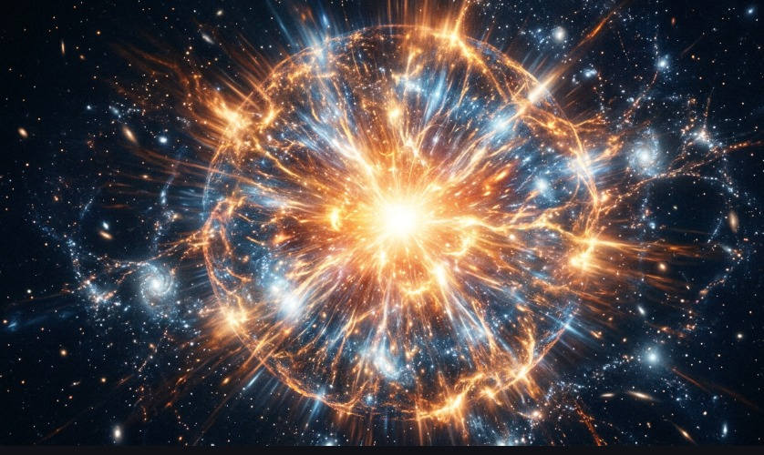
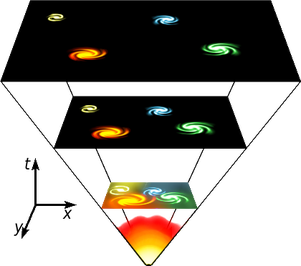
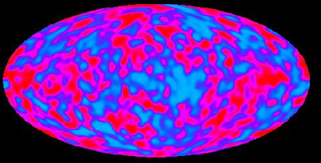
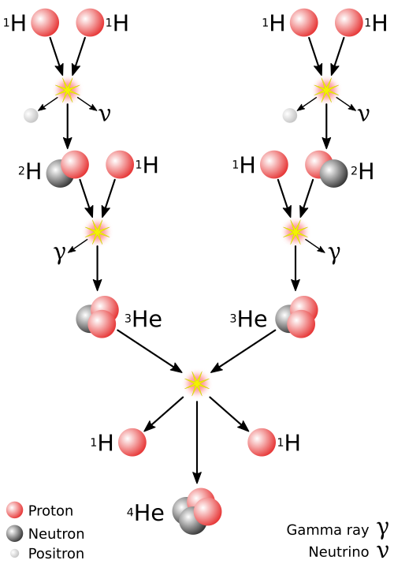

The word universe comes from the Latin term universum, formed from uni, meaning one, and versus, meaning turned or combined. In Latin it referred to all things considered as a single whole. By the 14th century, the word universe entered the English language with the meaning of the totality of all that exists.
In modern science, the universe is defined as the entirety of space, time, matter, and energy, together with the physical laws that govern their behavior.
Together, these elements form the structure of physical reality. The universe therefore refers to the complete system of space and time and all matter and energy within it.
The Big Bang is the scientific model Scientific model — a simplified theoretical framework used in science to explain and predict natural phenomena based on observations, experiments, and physical laws. that describes the origin and early evolution of the universe, model that describes the origin and early evolution of the universe. According to current cosmological research Cosmological research — scientific investigation of the origin, structure, evolution, and large-scale properties of the universe. , the universe began approximately 13.8 billion years ago from an extremely hot and dense state Dense state — a physical condition in which a large amount of matter is concentrated within a very small volume of space, producing extremely high density. and has been expanding ever since. As the universe expands, space itself stretches and the average temperature and density of matter and radiation decrease over time.
It is important to understand that the Big Bang is not a direct observationDirect observation refers to gathering information through immediate sensory experience or instruments that capture phenomena as they occur, providing empirical data without inferential steps. of the beginning of the universe. Instead, it is a theoretical modelTheoretical model is a conceptual framework, often mathematical, constructed to explain and predict natural phenomena based on established principles and assumptions, serving as an abstract representation of reality. developed to explain several independent astronomical observationsAstronomical observations are data collected by studying celestial objects and phenomena using telescopes and other instruments, providing direct evidence about the universe's composition, motion, and evolution.. Like all scientific models, it represents the best explanation currently supported by empirical evidenceEmpirical evidence is information acquired through observation or experimentation, verifiable by others, that forms the basis for scientific theories and models about the universe., but it remains open to refinement as new observations and improved theoriesTheories are well-substantiated explanations of some aspect of the natural world, acquired through the scientific method and repeatedly tested and confirmed through observation and experimentation. In cosmology, they provide a comprehensive framework for understanding cosmic phenomena. emerge.
The Big Bang should not be imagined as an explosion occurring at a specific point in space. Rather, it describes the expansion of spaceExpansion of space refers to the increase in distances between widely separated objects in the universe due to the stretching of the fabric of space itself, rather than objects moving through static space. itself. In an expanding universeThe Expanding Universe is the cosmological model describing the observation that space itself is growing, causing galaxies and galaxy clusters to move further apart over time, with no central point of expansion., distances between large-scale structuresLarge-scale structures refer to the cosmic web of galaxies, galaxy clusters, and superclusters, separated by vast voids, that form the largest known patterns in the universe. increase over time because the fabric of spaceFabric of space is a conceptual term referring to the underlying structure of the universe, often visualized as a flexible, three-dimensional medium that can stretch, warp, and carry energy (like gravitational waves), as described by general relativity. grows. As a result, every sufficiently distant region of the universe moves away from every other region, and the expansion occurs everywhere simultaneously rather than originating from a central location.

Evidence for the expansion of the universe was first identified through observations of distant galaxiesGalaxies are vast cosmic systems composed of stars, gas, dust, and dark matter, all bound together by gravity and orbiting a common center.. In 1929, the astronomer Edwin Hubble discovered that galaxies appear to move away from one another at speeds proportional to their distanceDistance, in the cosmological context, refers to the spatial separation between celestial objects, often measured in vast units like light-years or parsecs, and is crucial for understanding the scale and expansion of the universe. from the observerAn observer in this cosmological context refers to the location or entity from which measurements and observations of the universe are made, such as a telescope on Earth, whose perspective influences perceived distances and motions of celestial objects... This relationship is known as Hubble's Law, which can be written as
$$v = H_0 d$$

Another major line of evidence supporting the Big Bang model is the cosmic microwave background. This faint radiationRadiation is the emission or transmission of energy in the form of waves (like electromagnetic radiation) or particles (like alpha or beta particles). It plays a crucial role in the universe, transporting energy across vast distances and influencing cosmic evolution. fills all of spaceSpace is the three-dimensional expanse in which objects and events have relative position and direction. In cosmology, it refers to the fabric of the universe itself, which can expand and curve. and is interpreted as the cooled remnant of the intense heatHeat is a form of energy transfer that occurs due to a temperature difference between objects or systems. In the early universe, immense heat drove many physical processes. that existed in the early universeThe Early Universe refers to the period immediately following the Big Bang, typically encompassing the first few hundred thousand years, during which the universe was extremely hot, dense, and rapidly evolving.. It originated approximately 380,000 years after the beginning of cosmic expansionCosmic Expansion refers to the phenomenon where the fabric of spacetime itself is stretching, causing galaxies and galaxy clusters to recede from one another. This is not galaxies moving through space, but space between them increasing., when the universe cooled enough for electronsElectrons are fundamental subatomic particles with a negative electric charge, orbiting the nucleus of an atom. Their interactions are crucial for chemical bonds and the emission and absorption of light. and atomic nuclei Atomic nuclei are the dense, positively charged centers of atoms, composed of protons and neutrons. They contain nearly all of an atom's mass and determine its chemical element. to combine and form the first neutral atomsNeutral atoms are atoms that have an equal number of protons (positive charges) and electrons (negative charges), resulting in no net electrical charge. They are the fundamental building blocks of ordinary matter.. Once this occurred, lightSpace is the three-dimensional expanse in which objects and events have relative position and direction. In cosmology, it refers to the fabric of the universe itself, which can expand and curve. was able to travel freely through space.

Further support comes from primordial nucleosynthesisPrimordial nucleosynthesis is the process that occurred in the early universe, just minutes after the Big Bang, during which the first light atomic nuclei (primarily hydrogen, helium, and a trace of lithium) were formed through nuclear fusion., the process through which the first atomic nuclei formed during the first few minutes of cosmic history. During this period, the extremely high temperature of the early universe allowed nuclear reactions that produced the light elements hydrogen, helium, and small amounts of lithium. The observed abundance of these elements throughout the universe closely matches the predictions made by the Big Bang model.

The large-scale evolution of the universe can be described mathematically by the Friedmann equations, which are derived from Einstein's theory of general relativity. One form of these equations can be written as
$$\left(\frac{\dot{a}}{a}\right)^2 = \frac{8\pi G}{3}\rho - \frac{k}{a^2} + \frac{\Lambda}{3}$$
Together, astronomical observations and theoretical physics indicate that the universe evolved from an early hot and dense state and has continued expanding for billions of years. The Big Bang model therefore provides a coherent framework for understanding the origin, evolution, and large-scale structure of the universe, although the precise physical conditions that existed during the earliest moments of cosmic history remain an active area of scientific research.
Immediately after the Big Bang, the universe entered a phase of extremely rapid expansion and cooling. During the earliest moments of cosmic history, roughly between about \( 10^{-36} \text{ seconds} \) and the first few seconds after the Big Bang, the universe was extraordinarily hot and dense, and matter existed in forms very different from those observed today. Under such extreme conditions, the universe consisted primarily of highly energetic elementary particles and intense radiation.
As the universe expanded, its temperature steadily decreased. This cooling allowed the physical conditions of the universe to evolve continuously over time. Processes that were possible only at extremely high energies gradually gave way to new forms of interaction as the universe became larger, less dense, and less energetic.
One of the most important theoretical ideas associated with this stage is cosmic inflation. According to the inflationary model, the universe underwent an extremely rapid exponential expansion during a very brief interval shortly after the Big Bang. During this period, the size of the universe increased by an enormous factor in an extremely short time. Inflation helps explain why the universe appears remarkably uniform on large scales, why it is nearly isotropic, and why the large-scale geometry of space appears to be very close to flat.
During inflation, extremely small quantum fluctuations in the energy distribution of the early universe were stretched to enormous scales by the rapid expansion. These tiny variations in density later served as the initial irregularities from which galaxies, clusters of galaxies, and the large-scale cosmic structure of the universe eventually formed.
The expansion of the universe is described using the scale factor, denoted by a(t), which represents how the relative size of the universe changes with time. The instantaneous rate of expansion is described by the Hubble parameter, written as
$$H(t) = \frac{\dot{a}(t)}{a(t)}$$
During this early phase of expansion, the universe was dominated by radiation, meaning that the energy density of high-energy particles and photons governed its behavior. As expansion continued and the temperature dropped, particle interactions occurred at progressively lower energies. These conditions eventually allowed the formation of stable elementary particles, setting the stage for the next phase of cosmic evolution.
Although the precise physical mechanisms governing the earliest moments of cosmic expansion remain an active area of scientific research, modern cosmology indicates that the universe experienced a period of rapid expansion followed by continuous growth and cooling. These processes established the initial conditions from which all later cosmic structures ultimately developed.
Elementary particles formed during the earliest fractions of a second after the Big Bang, when the universe was extremely hot and dense. Under these conditions, matter did not exist in the form of atoms or nuclei. Instead, the universe consisted of quantum fields interacting at extremely high energies.
As the universe expanded, its temperature decreased. This cooling allowed energy to convert into particles through processes governed by quantum field theory, relativistic thermodynamics, and mass–energy equivalence.
$$E = mc^2$$
At extremely high temperatures, particle–antiparticle pairs were continuously created and destroyed in thermal equilibrium. Typical pair-production reactions include:
$$\gamma + \gamma \rightarrow e^- + e^+$$
$$\gamma + \gamma \rightarrow q + \bar{q}$$
where photons convert into particle–antiparticle pairs when the available energy exceeds the particle rest mass.
In quantum field theory, particles are understood as localized excitations of fundamental fields. Thus, elementary particles emerged as stable excitations of quantum fields as the universe cooled below specific energy thresholds.
Planck Epoch
Time:
\( t < 10^{-43} \text{ seconds} \)
Temperature:
\( T \sim 10^{32} \text{ K} \)
Characteristics:
All fundamental forces are believed to have been unified.
Physics at this scale requires a theory of quantum gravity, which is not yet fully established.
No distinct particles as described by the Standard Model can be defined at this stage.
Grand Unification Epoch
Time:
\( 10^{-43} \le t \le 10^{-36} \text{ seconds} \)
Characteristics:
Gravity separates from the other interactions.
The remaining interactions may still be unified under a Grand Unified Theory (GUT).
Shortly afterward, the strong interaction separates from the electroweak interaction as the universe expands and cools.
Possible particles include:
Gauge bosons of unified gauge fields
Hypothetical heavy bosons predicted by GUT models
Electroweak Epoch
Time:
\( 10^{-36} \le t \le 10^{-12} \text{ seconds} \)
Temperature:
\( T \sim 10^{15} \text{ K} \)
During this epoch the electroweak interaction still unifies the electromagnetic and weak interactions.
At approximately
\( t \sim 10^{-12} \text{ seconds} \)
, a phase transition occurs called electroweak symmetry breaking.The Higgs field acquires a non-zero vacuum expectation value:
$$\langle H \rangle \neq 0$$
As a consequence, many elementary particles acquire mass through their interaction with the Higgs field.
Particle species present include:
Quarks
up
down
charm
strange
top
bottom
Leptons
electron
muon
tau
electron neutrino
muon neutrino
tau neutrino
Gauge bosons
photon γ
W boson W±
Z boson Z⁰
gluons g
Scalar boson
Higgs boson H
Time:
\( 10^{-12} \le t \le 10^{-6} \text{ seconds} \)
Temperature:
\( T \sim 10^{13} \text{ K} \)
During this stage the universe existed as a quark–gluon plasma, a state of matter in which quarks and gluons were not confined into composite particles.
Properties of this state:
quarks moved freely within the plasma
gluons mediated the strong interaction
interactions were extremely frequent due to high density and temperature
The plasma behaved as a strongly interacting relativistic quantum fluid.
Experiments that recreate this state occur in relativistic heavy-ion collisions, where nuclei are accelerated and collided at extremely high energies.
Time:
\( t \sim 10^{-6} \text{ seconds} \)
Temperature:
\( T \sim 10^{12} \text{ K} \)
As the universe continued to cool, the strong interaction confined quarks into composite particles. This phenomenon is known as color confinement.
Quarks combined to form hadrons.
Two principal classes formed:
Baryons — three-quark particles
$$p = uud$$
$$n = udd$$
Mesons — quark–antiquark pairs
pions
kaons
At this stage the universe contained large populations of protons, neutrons, electrons, neutrinos, and photons.
These particles later became the constituents of atomic nuclei and atoms.
In the early universe, particle production occurred in nearly symmetric pairs of matter and antimatter.
e⁻ + e⁺
q + q̄
When particles encountered their antiparticles they annihilated:
$$\text{particle} + \text{antiparticle} \rightarrow \gamma + \gamma$$
However, a very small imbalance existed between matter and antimatter.
\( 1 \text{ excess matter particle per } 10^{9} \text{ particle–antiparticle pairs} \)
This imbalance is known as baryogenesis.
Because of this asymmetry, after most annihilations occurred, a small amount of matter remained. That remaining matter constitutes all visible matter in the present universe.
The precise physical mechanism responsible for baryogenesis remains an open problem in cosmology and particle physics.
After approximately the first microsecond of cosmic evolution, the universe contained the stable particle species described by the Standard Model of particle physics.
Fundamental fermions
quarks
leptons
Force-carrier bosons
photons γ
gluons g
Heavy bosons such as W± and Z⁰ exist but decay extremely rapidly through weak interactions.
Scalar boson
Higgs boson H
These particles form the fundamental particle content of the universe.
The particles formed during the earliest microseconds became the building blocks of all later cosmic structures.
$$\text{protons} + \text{neutrons} \rightarrow \text{atomic nuclei}$$
$$\text{nuclei} + \text{electrons} \rightarrow \text{atoms}$$
$$\text{atoms} \rightarrow \text{molecules}$$
$$\text{molecules} \rightarrow \text{stars, planets, and matter structures}$$
Thus, the formation of elementary particles established the fundamental material basis of the universe.
Following the formation of neutral atoms during the epoch of recombination (approximately 380,000 years after the Big Bang), the universe entered a period known as the cosmic Dark Ages. During this time, the universe was filled predominantly with neutral hydrogen and helium gas, with no luminous sources to emit light. The Cosmic Microwave Background (CMB) photons were no longer interacting with matter, allowing them to travel freely, but no new light sources had yet formed. This period lasted for several hundred million years, stretching from about \( 3.8 \times 10^{5} \text{ years} \) to several hundred million years after the Big Bang.
The Dark Ages were characterized by a relative absence of electromagnetic radiation in the visible and ultraviolet wavelengths. The existing matter, primarily neutral gas and dark matter, slowly began to coalesce under the influence of gravity. Small overdensities in the otherwise uniform distribution of matter, seeded by **quantum fluctuations** from the inflationary epoch, started to attract more matter. These regions would eventually grow dense enough to collapse and form the first stars and galaxies.
The first stars, often referred to as Population III stars, began to form approximately \( 1 \times 10^{8} \text{ to } 2.5 \times 10^{8} \text{ years} \). Unlike later generations of stars, Population III stars were composed almost entirely of the primordial elements created during Big Bang nucleosynthesis: hydrogen and helium, with only trace amounts of lithium. There were no heavier elements (which astronomers call "metals") available to facilitate cooling during their formation.
The formation of these first stars required immense gravitational collapse in the densest regions of the nascent universe. Without heavy elements to efficiently radiate away heat, the primordial gas clouds needed to be significantly more massive than the clouds that form modern stars to overcome the higher temperatures and pressures. Theoretical models suggest these first stars were therefore typically very massive, ranging from tens to hundreds of times the mass of our Sun.
Due to their enormous mass and pure hydrogen/helium composition, Population III stars were predicted to have been: Extremely Hot, with intense gravitational compression and very high core temperatures, making them very luminous. They were also Very Luminous, potentially millions of times more luminous than the Sun. Their massive nature meant they were Short-lived, existing for only a few million years. Finally, they were Crucial for Reionization, as the intense ultraviolet radiation they emitted played a vital role in reionizing the neutral hydrogen gas, ending the Dark Ages.
These stars were the universe's first "heavy element factories." Through nuclear fusion in their cores, they synthesized heavier elements such as carbon, oxygen, and iron. When these massive stars reached the end of their short lives, they exploded as powerful supernovae. These explosions dispersed the newly formed heavy elements into the surrounding intergalactic medium, enriching it for the formation of subsequent generations of stars and galaxies.
The formation and death of the first stars marked a profound turning point in cosmic history. They were instrumental in Ending the Dark Ages through their powerful radiation, which reionized the neutral hydrogen. They also were key in Enriching the Universe, as their supernova explosions produced and distributed the first heavy elements, essential for the formation of planets and life. Furthermore, they were vital in Seeding Galaxy Formation, as their remnants and enriched gas clouds provided the initial conditions for the hierarchical growth of the first galaxies.
Although Population III stars have never been directly observed due to their extreme distance and short lifespan, their existence is strongly supported by theoretical models and indirect observations of the early universe, particularly the chemical composition of very old stars and distant quasars. Future telescopes, such as the James Webb Space Telescope, continue to search for direct evidence of these elusive first luminaries.
The process of galaxy formation is deeply intertwined with the evolution of the universe following the Big Bang. It began during the cosmic Dark Ages, as gravity slowly amplified tiny density fluctuations that originated from the quantum realm during cosmic inflation. These regions of slightly higher matter density started to attract more dark matter and primordial gas (hydrogen and helium). Over hundreds of millions of years, these overdense regions collapsed to form the first gravitationally bound structures, which served as the seeds for galaxies.
This hierarchical process describes the universe as a cosmic web, where galaxies are formed within the densest knots of dark matter filaments. Dark matter, which accounts for about \( 27\% \), creating dark matter halos that acted as gravitational wells, pulling in and trapping baryonic matter (normal matter).
The earliest galaxies are thought to have formed around \( 3 \times 10^{8} \text{ to } 5 \times 10^{8} \text{ years} \), after the formation of the first stars (Population III stars). These initial protogalaxies were relatively small and irregular, born from the collapse of primordial gas clouds within dark matter halos. The Population III stars within these early clumps enriched the surrounding intergalactic medium with heavy elements through their explosive supernova deaths. This enrichment cooled the gas, making it easier for more stars to form and for the protogalaxies to grow.
The intense ultraviolet radiation from these first stars and quasars (powered by supermassive black holes in the centers of early galaxies) began the process of reionization. This epoch saw the neutral hydrogen gas in the universe being re-ionized, making the universe transparent to light and allowing photons to travel freely once again. This was a critical phase in galaxy evolution, as it marked the end of the cosmic Dark Ages.
Over billions of years, galaxies grew through a combination of processes:
Accretion of Gas: Galaxies continuously drew in new gas from the intergalactic medium, fueling ongoing star formation.
Mergers and Interactions: Smaller galaxies frequently collided and merged to form larger ones. These mergers are a primary driver of galaxy growth and morphological transformation, leading to the diverse array of spiral, elliptical, and irregular galaxies we observe today. Major mergers can trigger intense bursts of star formation and feed central supermassive black holes.
Star Formation and Feedback: Within galaxies, gas clouds collapse to form new stars. The energy released by supernovae and stellar winds from massive stars can heat and expel gas from galaxies, a process known as feedback, which regulates further star formation.
Supermassive Black Holes: Most massive galaxies host a supermassive black hole at their center. The growth of these black holes and the galaxies themselves appear to be closely linked, with feedback from active galactic nuclei (AGN) influencing the star formation history of their host galaxies.
The formation of galaxies is an ongoing process. Current observations and simulations like those from the James Webb Space Telescope provide insights into the properties of these early, distant galaxies, helping us piece together the complete cosmic history.
The formation of stellar systems, including stars like our Sun and their accompanying planets, occurs within giant molecular clouds (GMCs)—vast, cold, and dense regions of interstellar gas and dust. These nebulae, spanning tens to hundreds of light-years, are primarily composed of hydrogen, helium, and trace amounts of heavier elements (metals) dispersed by previous generations of supernovae.
The process begins when a region within a GMC becomes gravitationally unstable, often triggered by external perturbations like supernova shockwaves, galactic spiral arm passages, or collisions between molecular clouds. This instability causes a portion of the cloud to begin collapsing under its own gravity. As the cloud fragment contracts, it heats up, and its rotation rate increases, forming a rotating protostellar core surrounded by a protoplanetary disk.
Our Sun is believed to have formed approximately \( 4.6 \times 10^{9} \text{ years} \) from the gravitational collapse of a region within a larger molecular cloud. As the protostellar core of this collapsing cloud gathered more mass, its central temperature and pressure dramatically increased. When the core temperature reached about 15 million Kelvin, nuclear fusion of hydrogen into helium ignited, releasing immense amounts of energy. This ignition marked the birth of the Sun as a main-sequence star, entering a long, stable phase of its life. The primary nuclear fusion process in the Sun's core is the proton-proton chain, which can be summarized by the overall reaction:
$$4\,{}^{1}\mathrm{H} \rightarrow {}^{4}\mathrm{He} + 2e^{+} + 2\nu_e + 2\gamma$$
This reaction converts mass into energy according to Einstein's famous mass-energy equivalence principle, which you've seen before:
$$E = mc^2$$
where \( E \) is energy, \( m \) is mass, and \( c \) is the speed of light. The energy released provides the outward pressure that balances the inward pull of gravity, stabilizing the star.
The planets, asteroids, and comets of our Solar System formed concurrently with the Sun from the same protoplanetary disk—a rotating disk of gas and dust surrounding the young protostar. This is described by the nebular hypothesis. Within this disk, dust grains and ice particles collided and stuck together through accretion, gradually forming larger and larger clumps known as planetesimals.
Near the hot protostar, volatile compounds like water, methane, and ammonia could not condense, leading to the formation of the rocky inner planets (Mercury, Venus, Earth, Mars). Farther out, beyond the frost line, these volatile compounds froze, allowing the accumulation of much larger amounts of material, which led to the formation of the gas giants (Jupiter, Saturn) and ice giants (Uranus, Neptune). These gravitational interactions and collisions over tens of millions of years cleared out most of the debris, leaving behind the well-defined orbits of the planets we see today. The gravitational force \( (F) \) between two objects with masses \( m_1 \) and \( m_2 \) separated by a distance \( r \) is given by Newton's Law of Universal Gravitation:
$$F = G \frac{m_1 m_2}{r^2}$$
where \( G \) is the gravitational constant.. This force governed the accretion of planetesimals into planets.
The most widely accepted theory for the Moon's formation is the Giant-Impact Hypothesis. This theory proposes that about \( 4.5 \times 10^{9} \text{ years} \) ago, a Mars-sized protoplanet, often named Theia, collided obliquely with the early Earth. The tremendous impact vaporized and ejected a significant portion of Earth's outer layers and a part of the impactor into Earth's orbit.
This ejected material then rapidly coalesced under its own gravity to form the Moon. Evidence supporting this hypothesis includes the Moon's density (similar to Earth's mantle but lacking a large iron core), the depleted abundance of volatiles on the Moon, and the isotopic similarities between lunar rocks and Earth's mantle. The angular momentum of the Earth-Moon system is also consistent with such a large-scale collision.
The present universe, approximately \( 1.38 \times 10^{10} \text{ years} \) after the Big Bang, is characterized by a vast and complex hierarchy of structures, ranging from planets and stars to galaxies, galaxy clusters, and immense cosmic voids. Our understanding of its current state is largely based on the Standard Model of Cosmology, often referred to as the Lambda-CDM \( (\Lambda\mathrm{CDM}) \) cosmological model, which describes a universe dominated by dark energy \( (\Lambda) \) and cold dark matter (CDM).
Current measurements from various astronomical observations, including the Cosmic Microwave Background (CMB), supernovae (Type Ia), and large-scale structure surveys, indicate that the universe is composed of approximately:
\( \sim 68\% \) Dark Energy This mysterious component is responsible for the accelerated expansion of the universe. Its density, \( \rho_{\Lambda} \), remains nearly constant over time, as suggested by a simple cosmological constant.
\( \sim 27\% \) Dark Matter This non-baryonic, non-luminous form of matter interacts only gravitationally. It provides the additional gravitational pull needed to explain the rotation curves of galaxies and the dynamics of galaxy clusters.
\( \sim 5\% \) Baryonic Matter This is the "normal" matter we can observe, comprising atoms, protons, neutrons, and electrons—forming stars, planets, gas, and dust.
The Hubble parameter \( (H) \), which describes the expansion rate of the universe, continues to be a central focus of cosmological research. The value of the Hubble Constant \( (H_0) \), its current value, is approximately \( \sim 70 \,\mathrm{km\,s^{-1}\,Mpc^{-1}} \), though a tension exists between early and late universe measurements.
On the largest scales, the universe is not smoothly distributed but forms a cosmic web of filaments, sheets, and voids. Galaxies and galaxy clusters are concentrated along the filaments, while vast empty regions, known as voids, occupy much of the universe's volume. This intricate structure is the result of gravitational amplification of initial quantum fluctuations over cosmic time, where dark matter plays the dominant role in providing the underlying scaffolding for this structure.
Galaxy clusters are the largest known gravitationally bound structures, containing hundreds to thousands of galaxies, immense quantities of hot gas, and a dominant fraction of dark matter. Our own Milky Way galaxy belongs to the Local Group, which is part of the larger Laniakea Supercluster.
A defining characteristic of the present universe is its accelerated expansion, driven by dark energy. This phenomenon was first discovered in \( 1998 \) through observations of Type Ia supernovae. The Friedmann equation (which you've seen previously), adjusted for dark energy \( (\Lambda) \), helps describe this expansion:
$$\left(\frac{\dot{a}}{a}\right)^2 = \frac{8\pi G}{3}\rho - \frac{k}{a^2} + \frac{\Lambda}{3}$$
where \( a \) is the scale factor \( (a) \) approaches infinity in a finite time. This outcome depends on the dark energy equation of state parameter \( (w) \), where \( w = \frac{p}{\rho} \). For phantom energy, \( w < -1 \)., and Λ is the cosmological constant (representing dark energy). Because dark energy's density remains constant even as space expands, its influence grows relative to matter and radiation.
The fate of the universe depends crucially on the nature of dark energy. Under the \( \Lambda \)CDM model, the accelerated expansion will continue indefinitely, leading to a scenario known as the "Big Freeze" or "Heat Death". In this scenario, galaxies will eventually become so far apart that they will be beyond each other's cosmological horizon, rendering the universe an increasingly cold, dark, and empty place as stars burn out and black holes evaporate. However, the exact nature of dark energy remains one of the most profound mysteries in modern cosmology, and ongoing research aims to shed more light on this enigmatic force.
The age of the universe refers to the time elapsed since the Big Bang. According to the Lambda-CDM cosmological model the most accepted scientific model describing the universe's evolution, the universe is currently estimated to be approximately \( 1.38 \times 10^{10} \text{ years} \) old. This precise age is derived from a combination of fundamental physics and precise astronomical observations, primarily by measuring the expansion rate of the universe and extrapolating backward to its origin.
The primary method for calculating the age of the universe involves measuring the Hubble Constant \( (H_0) \), which quantifies the rate at which the universe is expanding today. If the universe has been expanding at a relatively constant rate, its age would simply be the inverse of the Hubble Constant \( (H_0) \)
$$t_H = \frac{1}{H_0}$$
However, the expansion rate has not been constant throughout cosmic history. The universe's expansion has been influenced by its varying energy density (composed of matter, radiation, and dark energy). In the early universe, matter and radiation slowed the expansion due to gravity, while in recent cosmic epochs, dark energy has caused the expansion to accelerate. Therefore, a more sophisticated calculation derived from the Friedmann equations is necessary to accurately determine the age of the universe.
The age of the universe \( (t_0) \) is given by the integral of the inverse of the Hubble parameter \( H(z) \) over redshift \( z \):
$$t_0 = \int_{0}^{\infty} \frac{dz}{(1+z)H(z)}$$
where \( H(z) \), the Hubble parameter at redshift \( z \), is dependent on the cosmological parameters defining the energy densities of matter, dark energy, and curvature. For a flat \( \Lambda \)CDM model, \( H(z) \) can be expressed as:
$$H(z) = H_0 \sqrt{\Omega_m (1+z)^3 + \Omega_r (1+z)^4 + \Omega_\Lambda}$$
Here, \( \Omega_m \), \( \Omega_r \), and \( \Omega_\Lambda \) represent the present-day density parameters for matter, radiation, and dark energy, respectively. Given that \( \Omega_m + \Omega_r + \Omega_\Lambda = 1 \) for a flat universe, precise measurements of these parameters and \( H_0 \) are crucial for an accurate age calculation.
The most precise measurements of these cosmological parameters come from detailed studies of the Cosmic Microwave Background (CMB), particularly from missions like NASA's WMAP and the European Space Agency's Planck satellite. The CMB provides a snapshot of the universe when it was only about \( 3.8 \times 10^{5} \text{ years} \) offering critical data on its early composition and expansion rate.
Independent confirmation comes from observations of the oldest known objects, such as globular clusters (dense groupings of very old stars) and very distant galaxies. The ages derived for these objects are consistent with, and do not exceed, the cosmic age derived from CMB and Hubble Constant \( (H_0) \) measurements, providing a crucial consistency check for the ΛCDM model.
The ultimate fate of the universe is one of the most profound questions in cosmology. While the Big Bang model describes its origin and evolution, its long-term future is dictated primarily by the universe's geometry, its total energy density, and the nature of dark energy. Current scientific hypotheses for the universe's end generally fall into several main scenarios, each depending on how these fundamental cosmological parameters evolve.
The Friedmann equations, which govern the dynamics of the universe, provide a mathematical framework for these predictions. Specifically, the acceleration equation:
$$\frac{\ddot{a}}{a} = - \frac{4\pi G}{3}(\rho + 3p) + \frac{\Lambda}{3}$$
where where \( \ddot{a} \) is the second derivative of the scale factor \( (a) \), \( \rho \) is energy density, \( p \) is pressure, \( G \) is the gravitational constant, and \( \Lambda \) is the cosmological constant. A positive \( (\rho + 3p) \) term leads to deceleration, while a positive \( \Lambda \) or sufficiently negative pressure \( (p) \) (characteristic of dark energy) causes acceleration. is the second derivative of the scale factor \( (a) \), \( \rho \) is energy density, \( p \) is pressure, \( G \) is the gravitational constant, and \( \Lambda \) is the cosmological constant. A positive \( (\rho + 3p) \) term leads to deceleration, while a positive \( \Lambda \) or sufficiently negative pressure \( (p) \) (characteristic of dark energy) causes acceleration.
The Big Freeze, or Heat Death, is the most likely scenario according to the current Lambda-CDM \( (\Lambda\text{CDM}) \) model and observations. If dark energy behaves as a cosmological constant, driving the accelerated expansion at its current rate, the universe will expand indefinitely. As space expands, galaxies will drift so far apart that they become isolated, eventually receding beyond each other's cosmological horizon.
Over incredibly long timescales, stars will exhaust their nuclear fuel and burn out, leaving behind stellar remnants like white dwarfs, neutron stars, and black holes. These remnants will gradually cool and fade. Eventually, even black holes are predicted to evaporate via Hawking radiation, leaving behind only a dilute sea of photons and leptons. The universe would reach a state of maximum entropy—a cold, dark, and empty void where no further processes can occur, as described by the laws of thermodynamics.
The Big Rip is a more extreme scenario that could occur if dark energy is not a simple cosmological constant but a more exotic form known as phantom energy. In this case, the density of dark energy would not remain constant but would actually increase as the universe expands.
If the dark energy density increases sufficiently, its repulsive force would eventually become so strong that it would overcome all other fundamental forces. First, galaxies would be torn apart, then galaxy clusters, then stars and planets, and finally, even atoms themselves would be ripped apart as the scale factor (a) approaches infinity in a finite time. This outcome depends on the dark energy equation of state parameter (w), where \( p = w \rho c^2 \). For phantom energy, w < -1.
The Big Crunch is a scenario that was once considered a strong possibility but is now largely disfavored by current observations showing accelerated expansion. This scenario would occur if the universe's total energy density \( (\rho) \) were sufficiently high that gravity could eventually overcome the expansion.
In a Big Crunch, the expansion of the universe would slow down, eventually stop, and then reverse. The universe would begin to contract, shrinking faster and faster until all matter and energy collapsed back into an infinitely hot and dense state, similar to the initial conditions of the Big Bang. This scenario would require the universe to have a positive curvature (\( k = +1 \) in the Friedmann equations) and a total density parameter \( (\Omega_{\text{total}}) \) greater than \( 1 \). Current data, however, suggests a nearly flat universe and ongoing accelerated expansion.
Related to the Big Crunch, some theories propose a Big Bounce. In this hypothetical scenario, the Big Crunch would not lead to an ultimate singularity but rather a rebound, initiating a new Big Bang and a new cycle of expansion. This is a cyclic model of the universe. While there is no direct observational evidence supporting a Big Bounce, some quantum gravity models offer theoretical avenues for such a rebound, avoiding a true singularity.
The Big Slurp, or Vacuum Decay, is a more exotic and less-understood scenario rooted in quantum field theory. It postulates that our current universe might exist in a "false vacuum"—a metastable state that is not the true lowest energy state (the true vacuum) of space. If a lower energy state exists, a bubble of this "true vacuum" could spontaneously nucleate somewhere in the universe and expand at nearly the speed of light.
This expanding bubble would convert everything it encounters—matter, energy, and even the laws of physics themselves—into a new, radically different form. It would effectively erase our universe and replace it with another, faster than any warning could propagate. While mathematically consistent within some frameworks of quantum mechanics, there is no observational evidence to suggest this scenario is imminent or even likely.
This scenario considers the possibility that dark energy is not a constant (cosmological constant) but a dynamic field called quintessence, whose equation of state parameter \( (w) \) can change over time. If dark energy's strength and influence were to evolve, it could lead to various outcomes:
A changing \( w \) could cause the universe to transition between different expansion behaviors: for instance, an initial acceleration could slow down and even reverse, leading to a Big Crunch if the quintessence field decays, or simply a less extreme Big Freeze if it weakens. Conversely, if \( w \) eventually drops below \( -1 \), it could lead to a Big Rip. This dynamic nature means the fate isn't fixed but depends on the unknown evolution of this quintessence field.
Ultimately, the true fate of the universe remains an active area of scientific research. Continued observations of dark energy, refinements in measuring cosmological parameters, and new theoretical insights will shed further light on how our universe will ultimately meet its end.
 Issac Tabares
Issac Tabares